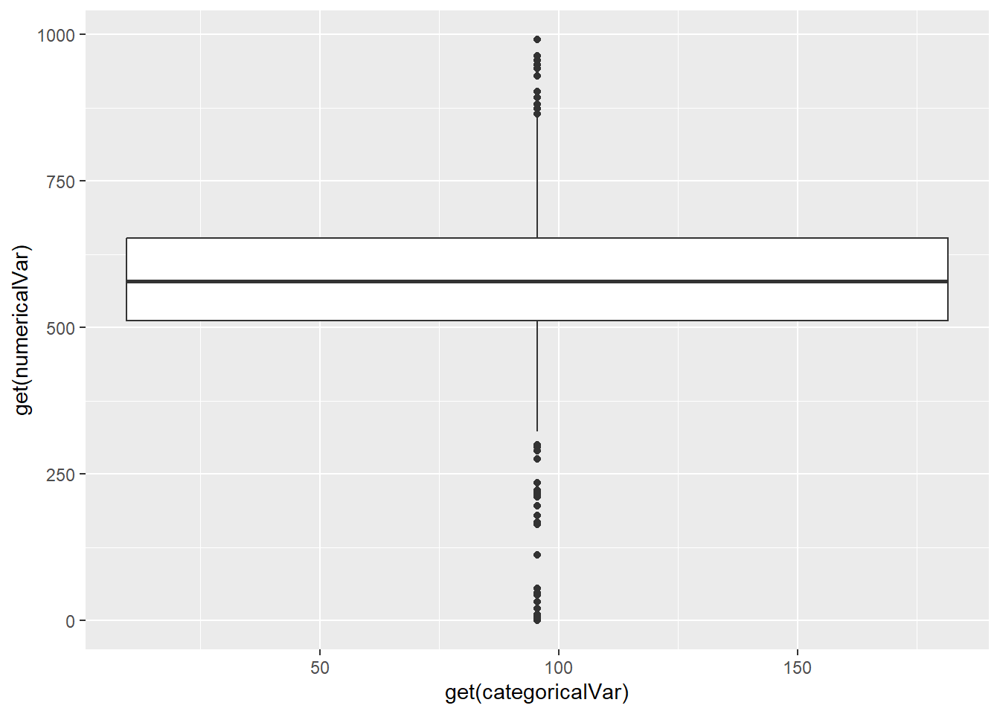

library(tidycensus)
library(jsonlite)
library(httr)
library(tibble)
library(dplyr)
library(tidyr)
library(lubridate)
library(tidyselect)
library(ggplot2)Project 1
Authors: Meerah Waters and Jack Wetzel
Introduction
This program is designed to create functions to retrieve and analyze data from the US census. The first portion will involve creating a function similar to the get_acs() function from the tidycensus package. It will take inputs from the user to specify the year, variables, and geographic location for which they wish to get data from. The function will then produce a tibble with data adhering to the specifies parameters. Afterwards, there will be additional functions that will allow the user to analyze the previously created tibble. The first is a summary function which will provide counts of categorical variables and basic statistical measures of the numerical variables. The second is a graphing function which takes the summary funciton as an input and produces a box plot based on specified variables.
Task 1: Data Processing
- First we need to install the necessary R packages that are used in the generic functions in this exercise.
- Then we need to call the API (this is the default call)
acsData <- "https://api.census.gov/data/2022/acs/acs1/pums?get=PWGTP,AGEP,SEX&for=region:04"- Then we need to parse the JSON data and put it in tibble format with the helper function
apiHelper <- function(apiCall) {
acsData <- GET(apiCall)
parsed <- fromJSON(rawToChar(acsData$content))
acsDataTib <- as_tibble(parsed)
names(acsDataTib) <- acsDataTib[1,]
acsDataTib <- acsDataTib[-1,]
}- Now were going to write a function to query the API that will allow the user to specify certain items. The function allows for the individual to select a year, Numerical Variables, Categorical Variables, and the Geographic area through the inputs of the function. How the function is written, causes only one singular “Geography” selection, while the Numerical and Categorical Variables are able to have multiple responses, as these are only the column headers being selected.
acsFunction <- function(year = 2022,
numericalVar = c("PWGTP", "AGEP"),
categoricalVar = c("SEX"),
geography = "state",
geo_code = "04") {
## Checking if function input is valid
if (year > 2022 | year < 2010) {
stop("Year must be between 2010 and 2022")
}
if (is.null(categoricalVar)) {
stop("One categorical variable must be returned")
}
if (is.null(numericalVar) | all(numericalVar == "PWGTP")) {
stop("One numeric variable other than PWGTP must be returned")
}
if (!(geography %in% c("state", "division", "region"))) {
stop("Invalid Geography value, must be: (state, division, region)")
}
if (is.null(geo_code)) {
geo_code <- "*"
}
## Building the URL
variables <- paste(c(numericalVar, categoricalVar), collapse = ",")
## Ensures PWGTP is always printed
if (!("PWGTP") %in% numericalVar) {
variables <- paste("PWGTP", variables, sep = ",")
}
url <- paste0("https://api.census.gov/data/",
year,
"/acs/acs1/pums?get=",
variables,
"&for=",
geography,
":",
geo_code
)
acsTibble <- apiHelper(apiCall = url)
## Making variables numeric
numericalVar <- numericalVar[!(numericalVar %in% c("JWAP", "JWDP"))]
acsTibble[numericalVar] <- lapply(acsTibble[numericalVar], as.numeric)
acsTibble$PWGTP <- as.numeric(acsTibble$PWGTP)
## Making variables factors
for (i in 1:length(categoricalVar)) {
cat_url <- paste0("https://api.census.gov/data/2022/acs/acs1/pums/variables/",
categoricalVar[i],
".json")
cat_var <- categoricalVar[i]
temp <- GET(cat_url)
temp_list <- temp$content |> rawToChar() |> fromJSON()
temp_cat <- temp_list$values$item
cat_values <- temp_cat[sort(names(temp_cat))]
vec <- list()
vec <- sapply(acsTibble[cat_var], function(x) cat_values[x])
vec <- sapply(vec, function(x) if (is.null(x)) NA else x)
vec_num <- unname(unlist(vec))
acsTibble[cat_var] <- vec_num
}
acsTibble <- acsTibble |>
mutate(across(where(is.character), as.factor))
## Formatting the time variables as minutes since midnight
if ("JWAP" %in% colnames(acsTibble)) {
temp <- GET("https://api.census.gov/data/2022/acs/acs1/pums/variables/JWAP.json")
temp_list <- temp$content |> rawToChar() |> fromJSON()
temp_JWAP <- temp_list$values$item
JWAP_values <- temp_JWAP[sort(names(temp_JWAP))]
JWAP_values[1] <- 0 ## Sets the first value to 0 as the loop cannot handle the first value
for (i in 2:length(JWAP_values)) {
time_strings <- strsplit(JWAP_values[[i]], " to ")
time_1 <- time_strings[[1]][1]
time_2 <- time_strings[[1]][2]
if (grepl("a\\.m\\.", time_1)) {
time_form_1 <- gsub("a\\.m\\.", "AM", time_1)
} else {
time_form_1 <- gsub("p\\.m\\.", "PM", time_1)
}
if (grepl("a\\.m\\.", time_2)) {
time_form_2 <- gsub("a\\.m\\.", "AM", time_2)
} else {
time_form_2 <- gsub("p\\.m\\.", "PM", time_2)
}
time_24_1 <- format(strptime(time_form_1, "%I:%M %p"), format="%H:%M")
time_24_2 <- format(strptime(time_form_2, "%I:%M %p"), format="%H:%M")
time_parts_1 <- strsplit(time_24_1, ":")[[1]]
time_parts_2 <- strsplit(time_24_2, ":")[[1]]
hours_1 <- as.numeric(time_parts_1[1])
hours_2 <- as.numeric(time_parts_2[1])
minutes_1 <- as.numeric(time_parts_1[2])
minutes_2 <- as.numeric(time_parts_2[2])
total_time_1 <- hours_1 * 60 + minutes_1
total_time_2 <- hours_2 * 60 + minutes_2
JWAP_values[i] <- (total_time_1 + total_time_2) / 2
}
vec <- list()
vec <- sapply(acsTibble$JWAP, function(x) JWAP_values[[x]])
vec <- sapply(vec, function(x) if (is.null(x)) NA else x)
vec_num <- unname(unlist(vec))
acsTibble$JWAP <- vec_num
}
if ("JWDP" %in% colnames(acsTibble)) {
temp <- GET("https://api.census.gov/data/2022/acs/acs1/pums/variables/JWDP.json")
temp_list <- temp$content |> rawToChar() |> fromJSON()
temp_JWDP <- temp_list$values$item
JWDP_values <- temp_JWDP[sort(names(temp_JWDP))]
JWDP_values[1] <- 0 ## Sets the first value to 0 as the loop cannot handle the first value
for (i in 2:length(JWDP_values)) {
time_strings <- strsplit(JWDP_values[[i]], " to ")
time_1 <- time_strings[[1]][1]
time_2 <- time_strings[[1]][2]
if (grepl("a\\.m\\.", time_1)) {
time_form_1 <- gsub("a\\.m\\.", "AM", time_1)
} else {
time_form_1 <- gsub("p\\.m\\.", "PM", time_1)
}
if (grepl("a\\.m\\.", time_2)) {
time_form_2 <- gsub("a\\.m\\.", "AM", time_2)
} else {
time_form_2 <- gsub("p\\.m\\.", "PM", time_2)
}
time_24_1 <- format(strptime(time_form_1, "%I:%M %p"), format="%H:%M")
time_24_2 <- format(strptime(time_form_2, "%I:%M %p"), format="%H:%M")
time_parts_1 <- strsplit(time_24_1, ":")[[1]]
time_parts_2 <- strsplit(time_24_2, ":")[[1]]
hours_1 <- as.numeric(time_parts_1[1])
hours_2 <- as.numeric(time_parts_2[1])
minutes_1 <- as.numeric(time_parts_1[2])
minutes_2 <- as.numeric(time_parts_2[2])
total_time_1 <- hours_1 * 60 + minutes_1
total_time_2 <- hours_2 * 60 + minutes_2
JWDP_values[i] <- (total_time_1 + total_time_2) / 2
}
vec <- list()
vec <- sapply(acsTibble$JWDP, function(x) JWDP_values[[x]])
vec <- sapply(vec, function(x) if (is.null(x)) NA else x)
vec_num <- unname(unlist(vec))
acsTibble$JWDP <- vec_num
}
## Removing geography columns from final tibble
if ("state" %in% colnames(acsTibble)) {
acsTibble <- acsTibble |>
select(-state)
}
if ("division" %in% colnames(acsTibble)) {
acsTibble <- acsTibble |>
select(-division)
}
if ("region" %in% colnames(acsTibble)) {
acsTibble <- acsTibble |>
select(-region)
}
return(acsTibble)
}Now we will test that the acsFunction works as intended. This will be done by giving it different inputs to ensure that all exceptions are handled properly. More tests were done than shown below throughout the coding process, but the ones below show a good picture.
## Test includes values different than function defaults for each input and tests time variable formatting
acsFunction(year = 2019, categoricalVar = c("HISPEED", "SCH"), numericalVar = c("JWAP"), geography = "region", geo_code = "01")Warning: The `x` argument of `as_tibble.matrix()` must have unique column names if
`.name_repair` is omitted as of tibble 2.0.0.
ℹ Using compatibility `.name_repair`.Warning: The `value` argument of `names<-()` must be a character vector as of tibble
3.0.0.# A tibble: 566,977 × 4
PWGTP JWAP HISPEED SCH
<dbl> <dbl> <fct> <fct>
1 10 0 N/A (GQ/vacant/no paid access to the internet) No, has not atten…
2 11 0 N/A (GQ/vacant/no paid access to the internet) Yes, public schoo…
3 33 0 N/A (GQ/vacant/no paid access to the internet) No, has not atten…
4 80 0 N/A (GQ/vacant/no paid access to the internet) Yes, private scho…
5 37 0 N/A (GQ/vacant/no paid access to the internet) No, has not atten…
6 77 0 N/A (GQ/vacant/no paid access to the internet) No, has not atten…
7 78 0 N/A (GQ/vacant/no paid access to the internet) Yes, public schoo…
8 71 0 N/A (GQ/vacant/no paid access to the internet) No, has not atten…
9 17 0 N/A (GQ/vacant/no paid access to the internet) Yes, public schoo…
10 73 0 N/A (GQ/vacant/no paid access to the internet) Yes, public schoo…
# ℹ 566,967 more rows## Tests function when only some inputs are specified
acsFunction(numericalVar = c("JWMNP", "GASP"), geography = "division", geo_code = "5")# A tibble: 676,726 × 4
PWGTP JWMNP GASP SEX
<dbl> <dbl> <dbl> <fct>
1 42 0 3 Male
2 32 0 3 Male
3 45 0 3 Male
4 41 0 3 Male
5 119 5 3 Male
6 6 0 3 Male
7 25 0 3 Male
8 59 0 3 Male
9 70 0 3 Male
10 7 0 3 Male
# ℹ 676,716 more rows## Tests the checks for valid function inputs
acsFunction(year = 2008)Error in acsFunction(year = 2008): Year must be between 2010 and 2022acsFunction(categoricalVar = NULL)Error in acsFunction(categoricalVar = NULL): One categorical variable must be returnedacsFunction(numericalVar = c("PWGTP"))Error in acsFunction(numericalVar = c("PWGTP")): One numeric variable other than PWGTP must be returnedacsFunction(geography = "city")Error in acsFunction(geography = "city"): Invalid Geography value, must be: (state, division, region)## Runs the acsFunction with default inputs
defaultTibble <- acsFunction()- Now we will build a new function that has similar parameters to the one in step 4 with the exception of allowing the user to specify multiple years. This will call the previous function multiple times and combine multiple tibbles into one. Additionally, it creates a new column titled year.
acsMultiYear <- function(years,
numericalVar = c("PWGTP", "AGEP"),
categoricalVar = c("SEX"),
geography = "state",
geo_code = "04") {
tibbleList <- list() ## initializing empty list for the loop
for (i in 1:length(years)) {
singleYrTib <- acsFunction(years[i], numericalVar, categoricalVar, geography, geo_code)
singleYrTib$year <- years[i] ## creates a new variable based on the year
tibbleList[[i]] <- singleYrTib
}
multYrTib <- bind_rows(tibbleList) ## combines the list of tibbles into a single tibble
return(multYrTib)
}We will now test that the acsMultiYear function works by giving it an input with two different years. Due to high processing time of including multiple years, the head and tail functions were used.
multYrTest <- acsMultiYear(years = c(2018, 2021))
head(multYrTest) ## year column is 2018# A tibble: 6 × 4
PWGTP AGEP SEX year
<dbl> <dbl> <fct> <dbl>
1 10 52 Male 2018
2 80 23 Female 2018
3 6 71 Male 2018
4 92 22 Male 2018
5 8 93 Male 2018
6 7 57 Male 2018tail(multYrTest) ## year column is 2021# A tibble: 6 × 4
PWGTP AGEP SEX year
<dbl> <dbl> <fct> <dbl>
1 65 75 Female 2021
2 129 19 Female 2021
3 76 24 Female 2021
4 76 23 Female 2021
5 29 85 Male 2021
6 26 80 Female 2021Task 2: Data Summary
- In this step, we are creating a summary function of our overall tibble, while also adding a new class to the overall data. The summary is dependent on the numerical and categorical variables selected in the acsFunction previously. By default, the function will summarize all variables present in the given tibble, but users can specify the only summarize specific ones.
acsSummary <- function(classcensus = defaultTibble,
numericalVar = NULL,
categoricalVar = NULL) {
## Adding the census class to the tibble
class(classcensus) <- c("census", class(classcensus))
## Checks if user specifies variables
if (!is.null(numericalVar)) {
classcensus <- classcensus |>
select(where(is.factor), PWGTP, all_of(numericalVar))
}
if (!is.null(categoricalVar)) {
classcensus <- classcensus |>
select(where(is.numeric), all_of(categoricalVar))
}
## Creates a tibble with counts for categorical variables
acsSummaryCat <- classcensus |>
pivot_longer(where(is.factor), names_to = "column_name", values_to = "var_count") |>
count(PWGTP, column_name, var_count) |>
pivot_wider(names_from = c(column_name, var_count), values_from = n, values_fill = 0)
## Creates a tibble with weighted mean & sd of numerical variables
acsSummaryNum <- classcensus |>
group_by(PWGTP) |>
mutate(across(where(is.numeric),
list(mean = mean, sd = sd),
.names = "{.col}_{.fn}")) |>
arrange(PWGTP) |>
select(PWGTP, ends_with("mean"),
ends_with("sd")) |>
distinct()
## Combines the numerical and categorical tibbles
acsTibbleSummary <- full_join(acsSummaryCat, acsSummaryNum)
return(acsTibbleSummary)
}Now we will test that the acsSummary function works as intended. This test makes sure that there are columns for the categorical variable counts along with a column for the mean & sd of numerical variables. It also tests that users are able to specify to summarize only specific variables from the original tibble.
test_tibble <- acsFunction(2021, categoricalVar = c("HHL", "FER"), numericalVar = c("JWAP", "GASP"))
testsummary <- acsSummary(classcensus = test_tibble, numericalVar = c("JWAP"), categoricalVar = ("HHL"))Joining with `by = join_by(PWGTP)`testsummary# A tibble: 608 × 9
PWGTP `HHL_N/A (GQ/vacant)` `HHL_Other Language` `HHL_English Only`
<dbl> <int> <int> <int>
1 1 34 0 0
2 2 40 1 0
3 3 36 1 0
4 4 68 2 0
5 5 89 2 3
6 6 99 6 6
7 7 74 15 5
8 8 62 16 13
9 9 49 14 17
10 10 61 23 21
# ℹ 598 more rows
# ℹ 5 more variables: HHL_Spanish <int>,
# `HHL_Asian and Pacific Island languages` <int>,
# `HHL_Other Indo-European languages` <int>, JWAP_mean <dbl>, JWAP_sd <dbl>- After creating our summary of our selected data, we are now able to plot the data in a digestible graph!
acsPlot <- function(dataset = testsummary,
numericalVar = "mean_GASP",
categoricalVar = "mean_HHL") {
ggplot(dataset,
aes(x = get(categoricalVar), y = get(numericalVar), weight = PWGTP)) +
geom_boxplot()
}acsPlot(testsummary, "JWAP_sd", "HHL_Spanish")Warning: Continuous x aesthetic
ℹ did you forget `aes(group = ...)`?Warning: Removed 81 rows containing non-finite outside the scale range
(`stat_boxplot()`).